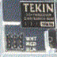

RECEIVERS
-
FM Micro Chrome Receiver
FM27, FM29, FM40, FM75

Replacement high-performance after-market FM receiver that is super small and light, just 1.4 inches square, .5 ounces. Use with your existing transmitter and crystals. Chrome plated for EMI, RFI, & electrostatic interference protection, plus 10-15% increased range. Perfect for any vehicle. Super-Low 2.5 volt operating voltage eliminates stuttering under heavy acceleration. 75 Mhz model also has an exclusive i.c. to deliver 25% further range. 27 and 75 Mhz band for use in the USA. 29 and 40 Mhz available outside the USA.
- FM27, #5227; FM29, #5229;
FM40, #5240; FM75, #5275
99.00